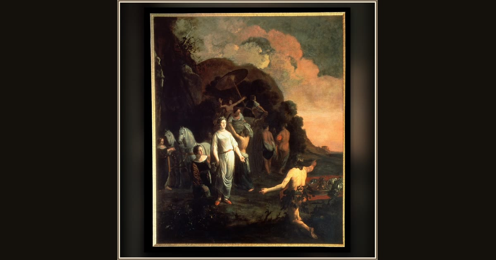

Odysseus and Nausicaa
Thomas de Keyser · 1657 · Royal Palace Amsterdam · Amsterdam, Netherlands
Painted for Amsterdam’s grand town hall, princess Nausicaa greets the shipwrecked stranger with the kindness that turns his luck at last. Explore its place in Book VI of the Odyssey.